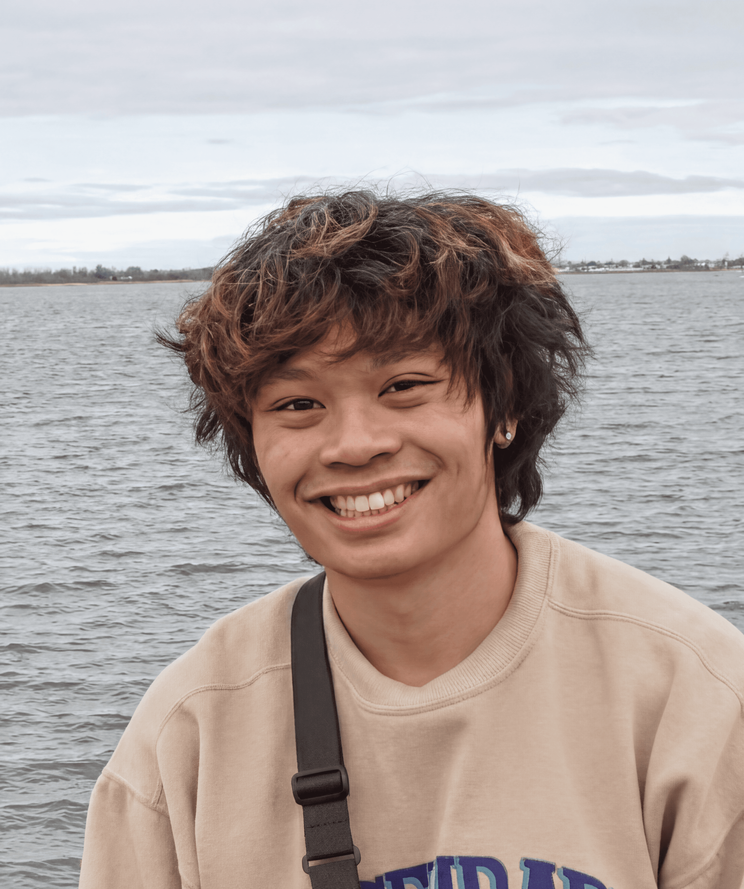

Hardware Systems Intern
Earned a return offer from the eBeam group after delivering EV hardware integration work across three vehicle programs.
Hello, I'm Miguel
M.S. ECE engineer at Carnegie Mellon focused on PCB design, firmware, RF automation, and EV hardware systems. The through-line is practical: make the hardware measurable, make the firmware explainable, and make the whole system survive the lab.

A systems engineer comfortable when the problem crosses board bring-up, firmware, lab equipment, vehicles, and teaching.
Recent work across automotive hardware, research, and embedded systems education.
Earned a return offer from the eBeam group after delivering EV hardware integration work across three vehicle programs.
Designed an automated RF matching network using a Teensy 4.1, custom PCB, motor control, and sensor feedback to stabilize sputtering chamber power delivery.
Mentored students across real-time kernel debugging, STM32 firmware drivers, PCB layout, testing, and autonomous vehicle design.
Investigated voltage drops in EV control units and audited 50+ hardware requirements across three electric vehicle programs.
Built and tested aircraft systems over 200+ hours while supporting FAA-compliant avionics and airframe integration.
Hardware-software projects with measurable behavior and real constraints.

Closed-loop RF matching network with gradient descent control, stepper-driven air-variable capacitors, VSWR telemetry, and a custom 2-layer PCB.

STM32 vehicle stack with a custom RTOS, ARMv7-M boot code, preemptive scheduling, PID speed control, UART telemetry, and LCD state updates.

Autonomous bottle-collection robot with Raspberry Pi vision, Arduino motor control, UART command protocol, custom power delivery, and arm actuation.

ESP32-S3 smart display in a custom Kirby enclosure with touch UI, weather, alarms, timers, minigame screens, Wi-Fi, and I2S audio.